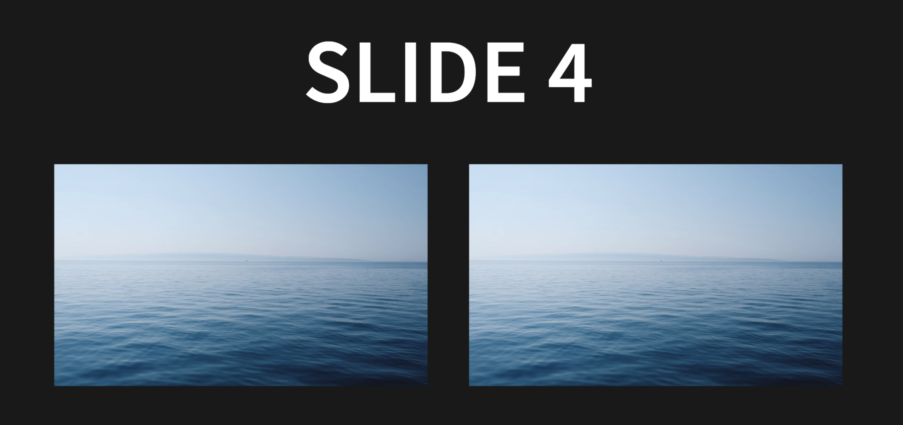

1. Reveal.jsとは¶
Reveal.jsとは、ウェブベースのプレゼンテーションフレームワークであり、ウェブ上にスライドを構築することができる。
2. note¶
# ローカル出力
reveal-md md_docs -w --port [PORT_NUM]
# htmlファイルの作成
reveal-md md_docs --static docs
3. Reveal.jsの初期設定¶
3.1. ディレクトリの作成と移動¶
最初に、プレゼンテーションのプロジェクト用に新しいディレクトリを作成し、そのディレクトリに移動。
mkdir ~/[YOUR_WORK_DIR]
3.2. reveal.jsのクローン¶
GitHubからreveal.jsのリポジトリをクローン。 これにより、revealに必要なファイルとフォルダ構造がローカル環境にコピーされる。
git clone https://github.com/hakimel/reveal.js.git
3.3. npmのインストール¶
reveal.jsはnpmを使用して依存関係を管理しているため、npmがシステムにインストールされていることを確認する。 npmはNode.jsのパッケージマネージャーで、Node.jsをインストールすることで利用できるようになるので、次のコマンドを使用してNode.js（およびnpm）をインストール。
brew install node
3.4. 依存関係のインストール¶
reveal.jsのnpm iコマンドでカレントディレクトリのpackage.jsonを利用して、依存関係をインストールする
cd reveal.js && npm i
3.5. Markdownのための設定¶
reveal-mdを使用すると、Markdownファイルから直接reveal.jsを使用したプレゼンテーションを作成できる。
3.5.1. reveal-mdのインストール¶
グローバルにreveal-mdをインストールします。これにより、コマンドラインからreveal-mdを実行できるようになる。
npm install -g reveal-md
3.5.2. ディレクトリ作成とmdファイル作成¶
プレゼンテーションのための新しいディレクトリを作成し、そのディレクトリに移動します。
mkdir ~/[YOUR_WORK_DIR]/md_docs
cd ~/[YOUR_WORK_DIR]/md_docs
次に、md_docsの中でmarkdownファイルを作成する。テストのため、簡単なファイルで良い
3.5.3. スライドの出力とhtmlファイルの出力¶
最後に、md_docsを指定して以下のコマンドを実行すると、自動でスライドが作成され、ブラウザに移動する
reveal-md md_docs -w --port [PORT_NUM]
このコマンドで実行されるファイルは、ホットリロードなので、mdファイルを編集して保存するとブラウザ側にも反映される
github pagesに出力する場合は、[YOUR_WORK_DIR]/docsにindex.htmlファイルを出力する必要がある。
reveal-md md_docs --static docs
3.6. github pagesの設定¶
sphinxで行ったgithub pagesの設定と同様
3.7. トラブルシューティング¶
以下のエラーが出た場合は
Fetching submodules
/usr/bin/git submodule sync --recursive
/usr/bin/git -c protocol.version=2 submodule update --init --force --depth=1 --recursive
Error: fatal: No url found for submodule path 'reveal.js' in .gitmodules
Error: The process '/usr/bin/git' failed with exit code 128
以下の内容を.gitmodulesという名前にして、ルートディレクトリに保存してpushする
[submodule "reveal.js"]
path = reveal.js
url = https://github.com/hakimel/reveal.js.git
4. Reveal.jsの基本的な利用方法¶
4.1. reveal-mdの基本記述方法¶
4.1.1. ページ構成¶
水平方向にスライドを作成するには、---（ダッシュを3つ）を使用します。
垂直方向にスライドを作成するには、----（ダッシュを4つ）を使用します。
# Slide 1
---
# Slide 2
## Subslide 2-1
----
## Subslide 2-2
----
## Subslide 2-3
---
# Slide 3
---
# Slide 4

4.1.2. 図の挿入¶
図を挿入する場合は、md_docsの中にファイルを置いて、参照する。
フォルダ構成は以下
md_docs
├── img
│ └── sea.png
└── md_docs.md
図を並べた時のmdファイルは以下
<div style="display: flex; justify-content: space-around;">
<img src="img/sea.png" style="width: 45%;">
<img src="img/sea.png" style="width: 45%;">
</div>

4.1.3. リンク¶
markdown形式で記述すればリンクになる
[Linkreference](https://www.yahoo.co.jp/)
ただし、HTMLのタグの内部の場合はHTMLタグを利用する。以下は、左寄せで小さい文字でリンクを記述する場合
<div style="text-align: left;">
<small>
References: References: <a href="https://www.yahoo.co.jp/">Link to reference</a>
</small>
</div>